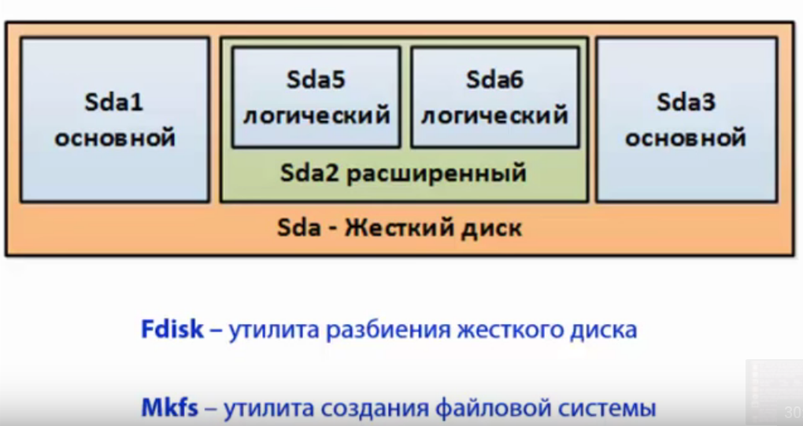

Работа с жесткими дисками
/ - самый большой раздел
/boot - загрузочный раздел
/home - домашнии папки
/root - папка суперпользователя
/etc - конфигурация системы
/opt - ПО третьих лиц
/var - часто изменяемые данные
/usr - пакеты программ, код ядра
/tmp - временные файлы
Swap - не монтируется

Жесткий диск может быть разбит на 4 основных раздела, чтобы создать больше разделов
нужно создать расширенный раздел, который содержит логические
Sda - жеские диски
Sda1 - раздел
Sda1- Sda4 - основные разделы
Sda5 - .. - логические разделы
fdisk - разбиение диска
mkfsf - форматирование дисков
etc/fstab - конфиг где монтируются файловые системы